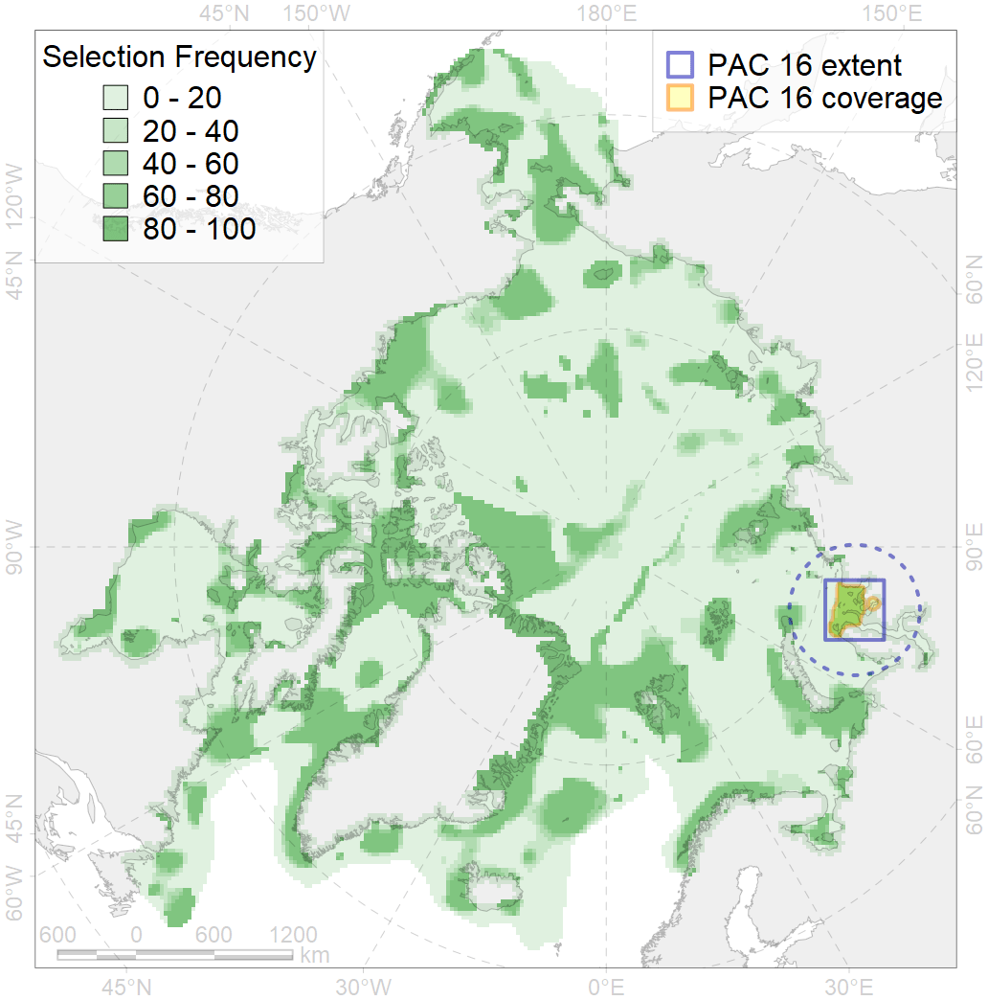
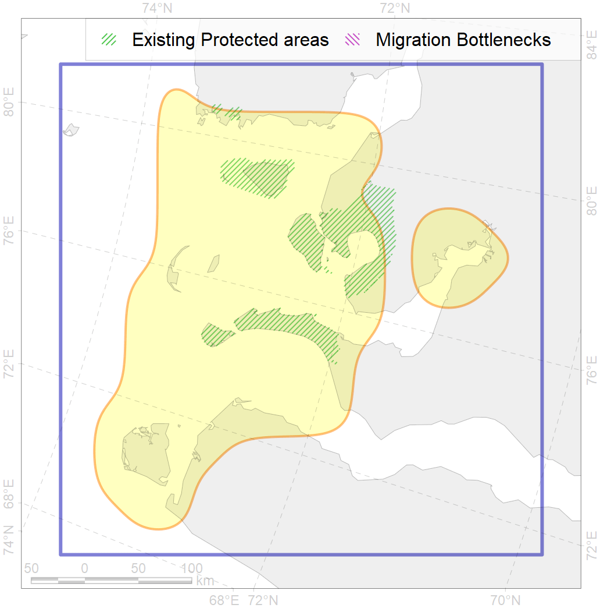

16
For more information regarding this PAC and to conduct custom spatial analysis using the PAC data or any spatial query, please consult Accenter.

0
CFs entirely within the PAC area
8
CFs at least 25% within the PAC area
9
CFs with at least 50% of their target achieved in the PAC
16
CFs with at least half of their target achieved in the PAC
| CF ID | CF Name | Proportion in the PAC | Conservation Target | Contribution to ArcNet Target Achievement | PAC’s Contribution to the Achieved Target |
|---|---|---|---|---|---|
| 7013 | Core of Ob-Yenissean brackishwater Province | 60.1% | 29.3% | 190.0% | 94.1% |
| 3114 | Polynyas distribution in the mainland Kara Sea region | 51.3% | 12.0% | 407.4% | 94.6% |
| 7112 | II.1.1.6. Ob-Yenissean estuarine region | 42.8% | 10.4% | 378.7% | 94.3% |
| 3011 | Fast ice distribution in the Western part of the Kara Sea | 39.3% | 6.0% | 581.8% | 88.6% |
| 4093 | Estuarian (Ob’-Enissey) brackish–water fish complex | 35.9% | 6.0% | 555.4% | 92.1% |
| 7100 | II.1.1.1. Eastern Kara coastal domain, outside of the Ob-Yenissean Estuary (see Fig. 3 for northern boundary of estuarine area) | 30.4% | 13.3% | 213.3% | 79.1% |
| 6043 | Stellers eider (Polysticta stelleri) Atlantic moulting&migration stopovers | 28.5% | 52.8% | 53.4% | 37.8% |
| 8033 | Salt marshes of the Kara Sea LME | 28.0% | 30.0% | 70.6% | 70.0% |
| 3116 | Polynyas distribution in the Yamal region | 23.5% | 12.0% | 187.7% | 64.5% |
| 6020 | Long-tailed duck (Clangula hyemalis) North East Atlantic moulting&migration stopovers | 22.2% | 76.8% | 27.9% | 27.8% |
| 8026 | intertidal zone of the Kara Sea LME | 20.5% | 18.0% | 113.7% | 45.5% |
| 2049 | Ringed seal whelping areas in the Kara Sea | 18.7% | 24.0% | 72.3% | 38.2% |
| 6006 | Brent goose (Branta bernicla bernicla) breeding&moulting grounds | 17.1% | 18.0% | 91.3% | 28.5% |
| 9028 | polar bear denning areas of KS (Kara Sea) subpopulation | 14.0% | 52.8% | 25.9% | 25.8% |
| 4061 | Feeding/nursery area of the Siberian sturgeon (Acipenser baerii) | 11.8% | 37.2% | 28.7% | 28.6% |
| 7065 | I.1.1.2. Coastal domain in the south-western Kara Sea | 11.7% | 16.3% | 66.9% | 51.4% |
| 4010 | Feeding area of the Muksun (Coregonus muksun) | 10.6% | 32.4% | 30.3% | 29.9% |
| 4043 | Range of Nawaga (Eleginus nawaga) | 10.4% | 12.0% | 80.5% | 23.0% |
| 2011 | Bearded seal whelping areas in the Kara Sea | 9.2% | 24.0% | 35.9% | 35.1% |
| 4015 | Feeding area of the Broad whitefish (Coregonus nasus), American populations | 9.1% | 32.4% | 25.8% | 22.1% |
| 1007 | Atlantic Walrus haulouts in Pechora and Kara region | 8.7% | 96.0% | 9.1% | 8.8% |
| 3027 | Marginal Ice Zone distribution in April in the Kara Sea LME | 8.2% | 12.0% | 64.7% | 16.6% |
| 4014 | Feeding area of the Siberian whitefish (Coregonus pidschian) | 8.0% | 24.0% | 30.8% | 19.4% |
| 3038 | Marginal Ice Zone distribution in July in the Kara Sea LME | 7.9% | 24.0% | 31.4% | 24.4% |
| 4021 | Feeding area of the Inconnu (Stenodus leucichthys nelma), Euro-Asian populations | 7.2% | 32.4% | 20.5% | 17.3% |
| 4052 | Range of the Fourhorn Sculpin (Myoxocephalus quadricornis), American populations | 6.6% | 3.0% | 204.7% | 14.1% |
| 4018 | Feeding area of the Vendace, Least cisco (Coregonus sardinellа), Euro-Asian populations | 6.4% | 24.0% | 24.6% | 12.9% |
| 4008 | Feeding / nursery area of the Arctic Cisco (Coregonus autumnalis), Eurasian populations | 6.2% | 38.4% | 15.0% | 14.1% |
| 6097 | Ivory gull (Pagophila eburnea) Kara Sea breeding colonies buffer feeding area | 5.8% | 43.2% | 12.7% | 12.7% |
| 5007 | Beluga of the Barents-Kara-Laptev Sea stock general distribution | 4.7% | 24.0% | 18.2% | 12.2% |
| 4030 | Feeding area of the Arctic charr (Salvelinus alpinus), anadromous populations | 4.2% | 38.4% | 10.0% | 8.8% |
| 9010 | polar bear of the KS (Kara Sea) subpopulation distribution | 3.9% | 26.4% | 13.9% | 13.6% |
| 4006 | Feeding/nursery area of the Pacific rainbow smelt (Osmerus dentex) | 3.7% | 18.0% | 19.2% | 7.3% |
| 4076 | Fish zoogeography, Arctic Region, High-Arctic Shelf Province, N Barents – Kara-Sea District | 3.0% | 7.1% | 39.4% | 10.2% |
| 4072 | Range of the Pechora herring (Clupea pallaii suworowi) | 2.9% | 12.0% | 24.0% | 6.8% |
| 4058 | Range of the Arctic flounder (Liopsetta glacialis) | 2.9% | 6.0% | 44.2% | 5.7% |
| 7035 | Siberian shelf region | 2.2% | 8.6% | 23.5% | 6.7% |
| 7046 | Western Kara transitional zone | 1.8% | 15.2% | 11.1% | 11.0% |
| 7109 | II.1.1.3. Middle and outer eastern shelf of Kara Sea | 0.9% | 5.6% | 15.0% | 7.8% |